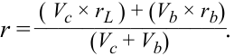

Learning Module 2 Alternative Investment Performance and Returns - Part 3: Practice Problems
Volume 8: Alternative Investments
Learning Module 2 Alternative Investment Performance and Returns
Part 3/3: Practice Problems (PDF Pages 66–72)
Tập 8: Đầu tư Thay thế (Volume 8: Alternative Investments)
Học phần 2: Hiệu quả Hoạt động và Tỷ suất Sinh lợi của Đầu tư Thay thế (Learning Module 2: Alternative Investment Performance and Returns)
Phần 3/3: Bài tập Thực hành (Practice Problems) (Trang PDF 66–72)
~~PRACTICE PROBLEMS~~
BÀI TẬP THỰC HÀNH (PRACTICE PROBLEMS)
1. The following information applies to Rotunda Advisers, a hedge fund:
1. Thông tin sau đây áp dụng cho Rotunda Advisers, một quỹ phòng hộ:
-
$288 million in AUM as of prior year end
-
2% management fee (based on year-end AUM)
-
20% incentive fee calculated:
-
Net of management fee
-
Using a 5% soft hurdle rate
-
Using a high-water mark (high-water mark is $357 million)
-
Current-year fund gross return is 25%.
-
288 triệu USD tài sản đang quản lý (AUM) tính đến cuối năm trước
-
Phí quản lý 2% (dựa trên AUM cuối năm)
-
Phí khuyến khích (incentive fee) 20% được tính:
-
Sau khi đã trừ phí quản lý (Net of management fee)
-
Sử dụng mức tỷ suất sinh lợi tối thiểu mềm (soft hurdle rate) là 5%
-
Sử dụng một mức đỉnh giá trị (high-water mark, mức đỉnh giá trị là 357 triệu USD)
-
Tỷ suất sinh lợi gộp của quỹ trong năm hiện tại là 25%.
The total fee earned by Rotunda in the current year is closest to:
Tổng số phí mà Rotunda kiếm được trong năm hiện tại gần nhất với mức:
A. $7.20 million.
-
A. 7,20 triệu USD.
-
B. 20,16 triệu USD.
-
C. 21,60 triệu USD.
-
B. $20.16 million.
-
C. $21.60 million.
2. Một quỹ phòng hộ có vốn ròng là 500 triệu GBP đã vay thêm 200 triệu GBP với lãi suất 4,5% mỗi năm. Tỷ suất sinh lợi trong năm hiện tại của quỹ là 15%. Tỷ suất sinh lợi sẽ là bao nhiêu nếu quỹ không bổ sung thêm bất kỳ khoản đòn bẩy nào?
2. A hedge fund with net capital of GBP500 million has borrowed an additional GBP200 million at 4.5% per annum. The current-year return of the fund is 15%. What would have been the return if the fund had not added any leverage?
-
A. 10.7%
-
B. 12.0%
-
C. 19.2%
-
A. 10,7%
-
B. 12,0%
-
C. 19,2%
3. A common problem for the “mark-to-model” valuation of private equity funds is most likely :
3. Một vấn đề phổ biến đối với việc định giá “theo mô hình” (“mark-to-model” valuation) của các quỹ vốn cổ phần tư nhân có khả năng cao nhất là:
-
A. a violation of accounting rules.
-
B. an understatement of portfolio risk.
-
C. an understatement of interim portfolio return.
-
A. vi phạm các quy tắc kế toán.
-
B. đánh giá thấp rủi ro của danh mục đầu tư (an understatement of portfolio risk).
-
C. đánh giá thấp tỷ suất sinh lợi giữa kỳ của danh mục đầu tư (an understatement of interim portfolio return).
4. A commodity hedge fund has three investors:
4. Một quỹ phòng hộ hàng hóa thương phẩm (commodity hedge fund) có ba nhà đầu tư:
-
€100 million from Investor A invested at Year 0,
-
€100 million from Investor B invested at the beginning of Year 2, and
-
€100 million from Investor C invested at the beginning of Year 3.
-
100 triệu EUR từ Nhà đầu tư A được đầu tư vào Năm 0,
-
100 triệu EUR từ Nhà đầu tư B được đầu tư vào đầu Năm 2, và
-
100 triệu EUR từ Nhà đầu tư C được đầu tư vào đầu Năm 3.
The gross returns before fees of the fund are as follows:
Tỷ suất sinh lợi gộp trước khi trừ phí của quỹ như sau:
| Investor A’s | Investor B’s | Investor C’s | ||
|---|---|---|---|---|
| Year | Annual Gross Return |
Investment (€ millions) |
Investment (€ millions) |
Investment (€ millions) |
| 0 | — | 100 | — | |
| 1 | 20% | — | — | |
| 2 | –15% | — | 100 | — |
| Năm (Year) | Tỷ suất Sinh lợi Gộp Hàng năm (Annual Gross Return) | Khoản đầu tư của Nhà đầu tư A (Investor A’s Investment, triệu EUR) | Khoản đầu tư của Nhà đầu tư B (Investor B’s Investment, triệu EUR) | Khoản đầu tư của Nhà đầu tư C (Investor C’s Investment, triệu EUR) |
|---|---|---|---|---|
| 0 | — | 100 | — | |
| 1 | 20% | — | — | |
| 2 | –15% | — | 100 | — |
| Investor A’s | Investor B’s | Investor C’s | ||
|---|---|---|---|---|
| Year | Annual Gross Return |
Investment (€ millions) |
Investment (€ millions) |
Investment (€ millions) |
| 3 | 15% | — | 100 | |
| 4 | 10% | — | — |
| Năm (Year) | Tỷ suất Sinh lợi Gộp Hàng năm (Annual Gross Return) | Khoản đầu tư của Nhà đầu tư A (Investor A’s Investment, triệu EUR) | Khoản đầu tư của Nhà đầu tư B (Investor B’s Investment, triệu EUR) | Khoản đầu tư của Nhà đầu tư C (Investor C’s Investment, triệu EUR) |
|---|---|---|---|---|
| 3 | 15% | — | 100 | |
| 4 | 10% | — | — |
The management fee is 2% based on end-of-year value. The incentive fee is 20% above the high-water mark and is calculated based on end-of-year value net of management fee.
Phí quản lý là 2% dựa trên giá trị cuối năm. Phí khuyến khích là 20% trên phần vượt mức đỉnh giá trị (high-water mark) và được tính dựa trên giá trị cuối năm sau khi đã trừ phí quản lý (net of management fee).
Which investor has earned the highest net return after the end of Year 4?
Nhà đầu tư nào đã kiếm được tỷ suất sinh lợi ròng cao nhất sau khi kết thúc Năm 4?
-
A. Investor A
-
B. Investor B
-
C. Investor C
-
A. Nhà đầu tư A (Investor A)
-
B. Nhà đầu tư B (Investor B)
-
C. Nhà đầu tư C (Investor C)
The following information relates to questions 5-6
Thông tin sau đây liên quan đến các câu hỏi 5–6
Buyout Capital, LLC, is a private equity fund that has the following characteristics:
Buyout Capital, LLC, là một quỹ vốn cổ phần tư nhân có các đặc tính sau đây:
-
Capital committed: $200 million
-
Preferred return: 8% soft hurdle, with full catch-up
-
Fund distribution: after five years
-
Management fee: none
-
Carried interest: 20% above preferred return
-
Waterfall structure: American (deal by deal) with clawback
-
Vốn cam kết (Capital committed): 200 triệu USD
-
Tỷ suất sinh lợi ưu đãi (Preferred return): mức tối thiểu mềm (soft hurdle) 8%, kèm theo bắt kịp toàn bộ (full catch-up)
-
Phân phối quỹ (Fund distribution): sau 5 năm
-
Phí quản lý (Management fee): không có (none)
-
Lợi ích phân chia (Carried interest): 20% vượt trên mức tỷ suất sinh lợi ưu đãi
-
Cấu trúc thác nước (Waterfall structure): kiểu Mỹ (theo từng thương vụ – deal by deal) kèm theo điều khoản thu hồi phí (with clawback)
The fund made five investments, tabulated as follows:
Quỹ đã thực hiện 5 khoản đầu tư, được lập bảng như sau:
| Investment | Year | Amount | ($ m) | i | Profit | |
|---|---|---|---|---|---|---|
No. |
Invested | Sold | Invested | Sold | $ m | % |
| 1 | 0 | 4 | 40 | 60 | 20 | 10.67% |
| 2 | 0 | 4 | 40 | 100 | 60 | 25.74% |
| 3 | 1 | 5 | 40 | 50 | 10 | 5.74% |
| 4 | 1 | 5 | 40 | 120 | 80 | 31.61% |
| 5 | 2 | 5 | 40 | 30 | (10) | neg. |
| Total | 200 | 360 | 160 | 12.47% |
|Khoản đầu tư số (Investment No.)|Năm Đầu tư (Year Invested)|Năm Bán (Year Sold)|Số tiền Đầu tư (Amount Invested, triệu $)**|**Số tiền Bán (*Amount Sold*, triệu $)|Lợi nhuận (Profit, triệu $)|Lợi nhuận (Profit, %)| |---|---|---|---|---|---|---| |1|0|4|40|60|20|10,67%| |2|0|4|40|100|60|25,74%| |3|1|5|40|50|10|5,74%| |4|1|5|40|120|80|31,61%| |5|2|5|40|30|(10)|âm (neg.)| |Tổng cộng (Total)|||200|360|160|12,47%|
5. What is the total carried interest to the GP?
5. Tổng lợi ích phân chia (carried interest) trả cho GP là bao nhiêu?
-
A. $30 million
-
B. $32 million
-
C. $34 million
-
A. 30 triệu USD
-
B. 32 triệu USD
-
C. 34 triệu USD
6. Buyout Capital, LLC, is a private equity fund that has the following
6. Buyout Capital, LLC, là một quỹ vốn cổ phần tư nhân có các
characteristics:
đặc tính sau đây:
-
Capital committed: $200 million
-
Preferred return: 8% soft hurdle, with full catch-up
-
Fund distribution: after five years
-
Management fee: none
-
Carried interest: 20% above preferred return
-
Waterfall structure: European (whole of fund)
-
Vốn cam kết (Capital committed): 200 triệu USD
-
Tỷ suất sinh lợi ưu đãi (Preferred return): mức tối thiểu mềm (soft hurdle) 8%, kèm theo bắt kịp toàn bộ (full catch-up)
-
Phân phối quỹ (Fund distribution): sau 5 năm
-
Phí quản lý (Management fee): không có (none)
-
Lợi ích phân chia (Carried interest): 20% vượt trên mức tỷ suất sinh lợi ưu đãi
-
Cấu trúc thác nước (Waterfall structure): kiểu Châu Âu (trên toàn bộ quỹ – whole of fund)
The fund made five investments that are tabulated as follows:
Quỹ đã thực hiện 5 khoản đầu tư được lập bảng như sau:
| Investment | Year | Amount ( | $ m) | Profit | ||
|---|---|---|---|---|---|---|
| No. | Invested | Sold | Invested | Sold | $ m | % |
| 1 | 0 | 4 | 40 | 60 | 20 | 10.67% |
| 2 | 0 | 4 | 40 | 100 | 60 | 25.74% |
| 3 | 1 | 5 | 40 | 50 | 10 | 5.74% |
| 4 | 1 | 5 | 40 | 120 | 80 | 31.61% |
| 5 | 2 | 5 | 40 | 30 | (10) | neg. |
| Total | 200 | 360 | 160 | 12.47% |
|Khoản đầu tư số (Investment No.)|Năm Đầu tư (Year Invested)|Năm Bán (Year Sold)|Số tiền Đầu tư (Amount Invested, triệu $)**|**Số tiền Bán (*Amount Sold*, triệu $)|Lợi nhuận (Profit, triệu $)|Lợi nhuận (Profit, %)| |---|---|---|---|---|---|---| |1|0|4|40|60|20|10,67%| |2|0|4|40|100|60|25,74%| |3|1|5|40|50|10|5,74%| |4|1|5|40|120|80|31,61%| |5|2|5|40|30|(10)|âm (neg.)| |Tổng cộng (Total)|||200|360|160|12,47%|
What is the total carried interest to the GP?
Tổng lợi ích phân chia (carried interest) trả cho GP là bao nhiêu?
- A. $30 million
-
A. 30 triệu USD
-
B. 32 triệu USD
-
C. 34 triệu USD
B. $32 million
- C. $34 million
7. Một quỹ phòng hộ có cấu trúc phí như sau:
7. A hedge fund has the following fee structure:
-
Phí quản lý hàng năm dựa trên AUM cuối năm: 2%
-
Phí khuyến khích (Incentive fee): 20%
-
Mức tỷ suất sinh lợi tối thiểu (Hurdle rate) trước khi bắt đầu thu phí khuyến khích: 4%
-
Mức đỉnh giá trị (High-water mark) hiện tại: 610 triệu USD
-
Annual management fee based on year-end AUM: 2%
-
Incentive fee: 20%
-
Hurdle rate before incentive fee collection starts: 4%
-
Current high-water mark: $610 million
Quỹ có giá trị là 583,1 triệu USD vào đầu năm. Sau một năm, quỹ có giá trị là 642 triệu USD trước khi trừ phí. Tỷ suất sinh lợi phần trăm ròng cho một nhà đầu tư trong năm này gần nhất với mức:
The fund has a value of $583.1 million at the beginning of the year. After one year, it has a value of $642 million before fees. The net percentage return to an investor for this year is closest to:
A. 6.72%.
A. 6,72%.
B. 6.80%.
B. 6,80%.
C. 7.64%.
C. 7,64%.
~~SOLUTIONS~~
LỜI GIẢI (SOLUTIONS)
- A is correct. Although the gross return of Rotunda results in a $360 million gross NAV, the deduction of the $7.2 million management fee brings NAV to $352.8 million, which is below the prior high-water mark. Rotunda earns a management fee of $7.20 million but does not earn an incentive fee because the year-end fund value net of management fee does not exceed the prior high-water mark of $357 million. Since Rotunda is still also below the prior-year high-water mark, the hurdle rate of return is also basically irrelevant in this fee calculation. The specifics of this calculation are as follows:
- A là đáp án đúng. Mặc dù tỷ suất sinh lợi gộp của Rotunda mang lại mức NAV gộp là 360 triệu USD, nhưng việc khấu trừ khoản phí quản lý 7,2 triệu USD đưa NAV xuống còn 352,8 triệu USD, thấp hơn mức đỉnh giá trị (high-water mark) trước đó. Rotunda kiếm được khoản phí quản lý là 7,20 triệu USD nhưng không kiếm được phí khuyến khích bởi vì giá trị quỹ cuối năm sau khi trừ phí quản lý không vượt qua mức đỉnh giá trị trước đó là 357 triệu USD. Vì Rotunda vẫn còn thấp hơn mức đỉnh giá trị của năm trước, nên mức tỷ suất sinh lợi tối thiểu (hurdle rate) về cơ bản cũng không liên quan trong phép tính phí này. Chi tiết cụ thể của phép tính này như sau:
End-of-year AUM = Prior year-end AUM × (1 + Fund return) = $288 million × 1.25 = $360 million.
AUM cuối năm $= \text{AUM cuối năm trước} \times (1 + \text{Tỷ suất sinh lợi của quỹ}) = \$288\text{ triệu} \times 1,25 = \$360\text{ triệu}$.
$360 million × 2% = $7.20 million management fee.
$\$360\text{ triệu} \times 2\% = \$7,20\text{ triệu}$ phí quản lý.
$360 million − $7.2 million = $352.8 million AUM net of management fee.
$\$360\text{ triệu} - \$7,2\text{ triệu} = \$352,8\text{ triệu}$ AUM sau khi trừ phí quản lý.
The year-end AUM net of fees do not exceed the $357 million high-water mark. Therefore, no incentive fee is earned.
AUM cuối năm sau khi trừ phí không vượt quá mức đỉnh giá trị 357 triệu USD. Do đó, không có khoản phí khuyến khích nào được hưởng.
- B is correct.
- B là đáp án đúng.
Using Equation 2,
Sử dụng Phương trình 2:
rL = Leveraged portfolio return/Cash position = [ r × ( Vb+Vc ) – ( Vb × rb )]/ Vc .
Or, after re-arranging the formula,
Hoặc, sau khi sắp xếp lại công thức:

Substituting rL = 0.15, Vb = 200, Vc = 500, rb = 0.045,
Thay thế $r_L = 0,15$, $V_b = 200$, $V_c = 500$, $r_b = 0,045$:
r = (500 × 0.15) + (200 × 0.045)/(200 + 500) = 12%.
Since leverage magnifies return when the borrowing cost is lower than asset returns, the unleveraged asset return must be lower than 15%.
Vì đòn bẩy khuếch đại tỷ suất sinh lợi khi chi phí đi vay thấp hơn tỷ suất sinh lợi của tài sản, nên tỷ suất sinh lợi của tài sản khi không có đòn bẩy phải thấp hơn 15%.
-
B is correct. Accounting rules require that investments be recorded at their fair value for financial reporting purposes. The fair value of private equity that owns illiquid assets requires certain estimates, rather than observable transaction prices, to be factored into valuation. A model that relies on Level 3 inputs may reflect an imperfect theoretical valuation and not a true liquidation value. The lack of new market information over time may anchor the interim valuation at or near initial cost. The relatively stable accounting valuations may give investors a false sense that they are less volatile. At the same time, there is a potential conflict of interest for the GP to overstate interim return because of the implication for carried interest. As a result, returns may be smoothed or overstated and the volatility of returns understated.
-
C is correct. Despite investing for the shortest period of time in the fund (i.e., two years), Investor C has earned the highest net return compared to the other two investors. The following table illustrates the calculations based on the “2 and 20” fee structure and the high-water marks facing each investor in any particular year; in each case, the incentive fee is calculated using Equation 8:
-
B là đáp án đúng. Các quy tắc kế toán yêu cầu các khoản đầu tư phải được ghi nhận theo giá trị hợp lý (fair value) của chúng cho các mục đích lập báo cáo tài chính. Giá trị hợp lý của vốn cổ phần tư nhân sở hữu các tài sản kém thanh khoản đòi hỏi phải đưa một số ước tính nhất định, thay vì các mức giá giao dịch có thể quan sát được, vào quá trình định giá. Một mô hình dựa trên các yếu tố đầu vào Cấp độ 3 (Level 3 inputs) có thể phản ánh một mức định giá lý thuyết không hoàn hảo chứ không phải là một giá trị thanh lý thực sự. Việc thiếu thông tin thị trường mới theo thời gian có thể neo giữ mức định giá giữa kỳ ở mức bằng hoặc gần với giá gốc ban đầu. Các mức định giá kế toán tương đối ổn định có thể mang lại cho các nhà đầu tư một cảm giác sai lầm rằng chúng ít biến động hơn. Đồng thời, có một sự xung đột lợi ích tiềm ẩn khiến GP phóng đại tỷ suất sinh lợi giữa kỳ vì những hàm ý liên quan đến lợi ích phân chia (carried interest). Hệ quả là, tỷ suất sinh lợi có thể bị làm mượt (smoothed) hoặc bị phóng đại (overstated) và độ biến động của tỷ suất sinh lợi (rủi ro danh mục) bị đánh giá thấp hơn thực tế (understated).
-
C là đáp án đúng. Mặc dù đầu tư trong khoảng thời gian ngắn nhất vào quỹ (tức là hai năm), Nhà đầu tư C đã kiếm được tỷ suất sinh lợi ròng cao nhất so với hai nhà đầu tư còn lại. Bảng dưới đây minh họa các phép tính dựa trên cấu trúc phí “2 và 20” và các mức đỉnh giá trị (high-water marks) mà mỗi nhà đầu tư phải đối mặt trong bất kỳ năm cụ thể nào; trong mỗi trường hợp, phí khuyến khích được tính bằng cách sử dụng Phương trình 8:
RGP ( High-Water Mark ) = ( P 2 × rm ) + max[0, ( P 2 – PHWM ) × p ].
The net return is calculated using Equation 9:
Tỷ suất sinh lợi ròng được tính bằng cách sử dụng Phương trình 9:
ri = ( P 2 – P 1 – RGP )/ P 1.
| Year | Annual Gross Return |
Investor A’s Investment |
Year-End AUM (Before Fee) |
High-Water Mark |
Management Fee (2%) |
Incentive Fee (20%) |
Year-End AUM (After Fee) |
|---|---|---|---|---|---|---|---|
| (Before Fee) | |||||||
| 0 | — | 100.00 | 100.00 | — | — | — | 100.00 |
| 1 | 20% | — | 120.00 | 100.00 | 2.40 | 3.52 | 114.08 |
| 2 | -15% | — | 96.97 | 114.08 | 1.94 | — | 95.03 |
| 3 | 15% | — | 109.28 | 114.08 | 2.19 | — | 107.10 |
| 4 | 10% | — | 117.81 | 114.08 | 2.36 | 0.27 | 115.18 |
| Investor | A's net return | 15.18% |
| Năm (Year) | Tỷ suất Sinh lợi Gộp Hàng năm (Annual Gross Return) | Khoản đầu tư của Nhà đầu tư A (Investor A’s Investment) | AUM Cuối năm (Trước Phí) | Mức Đỉnh Giá trị (High-Water Mark) | Phí Quản lý (2%) | Phí Khuyến khích (20%) | AUM Cuối năm (Sau Phí) |
|---|---|---|---|---|---|---|---|
| 0 | — | 100,00 | 100,00 | — | — | — | 100,00 |
| 1 | 20% | — | 120,00 | 100,00 | 2,40 | 3,52 | 114,08 |
| 2 | -15% | — | 96,97 | 114,08 | 1,94 | — | 95,03 |
| 3 | 15% | — | 109,28 | 114,08 | 2,19 | — | 107,10 |
| 4 | 10% | — | 117,81 | 114,08 | 2,36 | 0,27 | 115,18 |
| Tỷ suất sinh lợi ròng của Nhà đầu tư A (Investor A's net return) | 15,18% |
| Year | Annual Gross Return |
Investor B’s Investment |
Year-End AUM (Before Fee) |
High-Water Mark |
Management Fee (2%) |
Incentive Fee (20%) |
Year-End AUM (Before Fee) |
|---|---|---|---|---|---|---|---|
| 0 | — | — | — | — | — | — | — |
| 1 | 20% | — | — | — | — | — | — |
| 2 | -15% | 100.00 | 85.00 | 100.00 | 1.70 | — | 83.30 |
| 3 | 15% | 95.80 | 100.00 | 1.92 | — | 93.88 | |
| 4 | 10% | — | 103.27 | 100.00 | 2.07 | 0.24 | 100.96 |
| Investor | B's net return | 0.96% |
| Năm (Year) | Tỷ suất Sinh lợi Gộp Hàng năm (Annual Gross Return) | Khoản đầu tư của Nhà đầu tư B (Investor B’s Investment) | AUM Cuối năm (Trước Phí) | Mức Đỉnh Giá trị (High-Water Mark) | Phí Quản lý (2%) | Phí Khuyến khích (20%) | AUM Cuối năm (Sau Phí) |
|---|---|---|---|---|---|---|---|
| 0 | — | — | — | — | — | — | — |
| 1 | 20% | — | — | — | — | — | — |
| 2 | -15% | 100,00 | 85,00 | 100,00 | 1,70 | — | 83,30 |
| 3 | 15% | — | 95,80 | 100,00 | 1,92 | — | 93,88 |
| 4 | 10% | — | 103,27 | 100,00 | 2,07 | 0,24 | 100,96 |
| Tỷ suất sinh lợi ròng của Nhà đầu tư B (Investor B's net return) | 0,96% |
| Year | Annual Gross Return |
Investor C’s Investment |
Year-End AUM (Before Fee) |
High-Water Mark |
Management Fee (2%) |
Incentive Fee (20%) |
Year-End AUM (Before Fee) |
|---|---|---|---|---|---|---|---|
| 0 | — | — | — | — | — | — | — |
| 1 | 20% | — | — | — | — | — | — |
| 2 | -15% | — | — | — | — | — | — |
| 3 | 15% | 100.00 | 115.00 | 100.00 | 2.30 | 2.54 | 110.16 |
| 4 | 10% | — | 121.18 | 110.16 | 2.42 | 1.72 | 117.03 |
| Investor | C's Net Return | 17.03% |
| Năm (Year) | Tỷ suất Sinh lợi Gộp Hàng năm (Annual Gross Return) | Khoản đầu tư của Nhà đầu tư C (Investor C’s Investment) | AUM Cuối năm (Trước Phí) | Mức Đỉnh Giá trị (High-Water Mark) | Phí Quản lý (2%) | Phí Khuyến khích (20%) | AUM Cuối năm (Sau Phí) |
|---|---|---|---|---|---|---|---|
| 0 | — | — | — | — | — | — | — |
| 1 | 20% | — | — | — | — | — | — |
| 2 | -15% | — | — | — | — | — | — |
| 3 | 15% | 100,00 | 115,00 | 100,00 | 2,30 | 2,54 | 110,16 |
| 4 | 10% | — | 121,18 | 110,16 | 2,42 | 1,72 | 117,03 |
| Tỷ suất sinh lợi ròng của Nhà đầu tư C (Investor C's Net Return) | 17,03% |
- A is correct. The distribution of profit of each investment is as follows:
- A là đáp án đúng. Việc phân phối lợi nhuận của từng khoản đầu tư như sau:
| Year | Amount ( | $ m) | Pri | ofit | ||||
|---|---|---|---|---|---|---|---|---|
| Investment | LPs at | GP at | ||||||
| No. | Invested | Sold | Invested | Sold | $ m | % | 80% | 20% |
| 1 | 0 | 4 | 40 | 60 | 20 | 10.67% | 16 | 4 |
| 2 | 0 | 4 | 40 | 100 | 60 | 25.74% | 48 | 12 |
| 3 | 1 | 5 | 40 | 50 | 10 | 5.74% | 10 | 0 |
| 4 | 1 | 5 | 40 | 120 | 80 | 31.61% | 64 | 16 |
|Khoản đầu tư số (Investment No.)|Năm Đầu tư (Year Invested)|Năm Bán (Year Sold)|Số tiền Đầu tư ($ triệu)**|**Số tiền Bán ($ triệu)|Lợi nhuận ($ triệu)|Lợi nhuận (%)|Phần của LPs ở mức 80%|Phần của GP ở mức 20%| |---|---|---|---|---|---|---|---|---| |1|0|4|40|60|20|10,67%|16|4| |2|0|4|40|100|60|25,74%|48|12| |3|1|5|40|50|10|5,74%|10|0| |4|1|5|40|120|80|31,61%|64|16|
| Year | Amount ( | $ m) | Pri | ofit | ||||
|---|---|---|---|---|---|---|---|---|
| Investment | LPs at | GP at | ||||||
| No. | Invested | Sold | Invested | Sold | $ m | % | 80% | 20% |
| 5 | 2 | 5 | 40 | 30 | (10) | neg. | (8) | (2) |
| Total | 200 | 360 | 160 | 12.47% | 130 | 30 |
|Khoản đầu tư số (Investment No.)|Năm Đầu tư (Year Invested)|Năm Bán (Year Sold)|Số tiền Đầu tư ($ triệu)**|**Số tiền Bán ($ triệu)|Lợi nhuận ($ triệu)|Lợi nhuận (%)|Phần của LPs ở mức 80%|Phần của GP ở mức 20%| |---|---|---|---|---|---|---|---|---| |5|2|5|40|30|(10)|âm (neg.)|(8)|(2)| |Tổng cộng (Total)|||200|360|160|12,47%|130|30|
Since the preferred return of the LP is 8%, Investments 1, 2, and 4 all meet the criterion and the profit is split 80/20 between the LPs and GP. Investment 3 does not earn the GP any carry because it fails to meet the preferred return; neither does Investment 5, whose profit is negative. Because of the clawback clause, the GP’s carry is reduced by $2 million (or 20% of the loss on Investment 5). Therefore, the total carried interest adds up to $30 million, or 30/160 = 18.75% of the total profit made by the fund.
Vì mức tỷ suất sinh lợi ưu đãi của LP là 8%, các Khoản đầu tư 1, 2 và 4 đều đáp ứng tiêu chí này và lợi nhuận được chia theo tỷ lệ 80/20 giữa các LP và GP. Khoản đầu tư 3 không mang lại cho GP bất kỳ khoản lợi ích phân chia (carry) nào bởi vì nó không đạt được mức tỷ suất sinh lợi ưu đãi; Khoản đầu tư 5 cũng tương tự vì lợi nhuận của nó mang giá trị âm. Bởi vì có điều khoản thu hồi phí (clawback clause), phần lợi ích phân chia của GP bị giảm đi 2 triệu USD (tức là 20% khoản lỗ trên Khoản đầu tư 5). Do đó, tổng lợi ích phân chia cộng lại bằng 30 triệu USD, hay $30/160 = 18,75\%$ tổng lợi nhuận do quỹ tạo ra.
- B is correct. A European waterfall occurs at the aggregate fund level. As long as the fund exit IRR exceeds 8% after five years, the GP will be eligible for the full 20% carried interest on the profit made from all investments—that is, $160 million × 20% = $32 million.
- B là đáp án đúng. Cấu trúc thác nước kiểu Châu Âu (European waterfall) diễn ra ở cấp độ tổng thể toàn quỹ (aggregate fund level). Miễn là IRR thoái vốn của quỹ vượt quá 8% sau 5 năm, GP sẽ đủ điều kiện nhận toàn bộ 20% lợi ích phân chia (carried interest) trên lợi nhuận tạo ra từ tất cả các khoản đầu tư—tức là $\$160\text{ triệu} \times 20\% = \$32\text{ triệu}$.
| Year | Amount | ($ m) | Proi | fit | ||||
|---|---|---|---|---|---|---|---|---|
| Investment | LPs at | GP at | ||||||
| No. | Invested | Sold | Invested | Sold | $ m | % | 80% | 20% |
| 1 | 0 | 4 | 40 | 60 | 20 | 10.67% | ||
| 2 | 0 | 4 | 40 | 100 | 60 | 25.74% | ||
| 3 | 1 | 5 | 40 | 50 | 10 | 5.74% | ||
| 4 | 1 | 5 | 40 | 120 | 80 | 31.61% | ||
| 5 | 2 | 5 | 40 | 30 | (10) | neg. | ||
| Total | 200 | 360 | 160 | 12.47% | 128 | 32 |
|Khoản đầu tư số (Investment No.)|Năm Đầu tư (Year Invested)|Năm Bán (Year Sold)|Số tiền Đầu tư ($ triệu)**|**Số tiền Bán ($ triệu)|Lợi nhuận ($ triệu)|Lợi nhuận (%)|Phần của LPs ở mức 80%|Phần của GP ở mức 20%| |---|---|---|---|---|---|---|---|---| |1|0|4|40|60|20|10,67%||| |2|0|4|40|100|60|25,74%||| |3|1|5|40|50|10|5,74%||| |4|1|5|40|120|80|31,61%||| |5|2|5|40|30|(10)|âm (neg.)||| |Tổng cộng (Total)|||200|360|160|12,47%|128|32|
- C is correct. The management fee for the year is $642 million × 0.02 = $12.84 million. Because the ending gross value of the fund of $642 million exceeds the high-water mark of $610 million, the hedge fund can collect an incentive fee on gains above this high-water mark but net of the hurdle rate of return. The incentive fee calculation becomes
- C là đáp án đúng. Phí quản lý trong năm là $\$642\text{ triệu} \times 0,02 = \$12,84\text{ triệu}$. Bởi vì giá trị gộp cuối kỳ của quỹ là 642 triệu USD vượt qua mức đỉnh giá trị (high-water mark) là 610 triệu USD, quỹ phòng hộ có thể thu phí khuyến khích trên phần lãi vượt trên mức đỉnh giá trị này nhưng sau khi đã trừ đi mức tỷ suất sinh lợi tối thiểu (hurdle rate). Phép tính phí khuyến khích trở thành:
{$642 – [$610 × (1 + 0.04)]} × 0.20 = $1.52 million.
The net return to the investor for the year is
Tỷ suất sinh lợi ròng cho nhà đầu tư trong năm là:
[($642 – $12.84 – $1.52)/$583.1] – 1 = 0.07638 ≈ 7.64%.